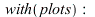
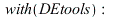
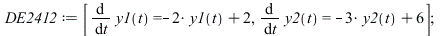
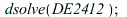
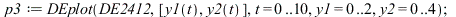
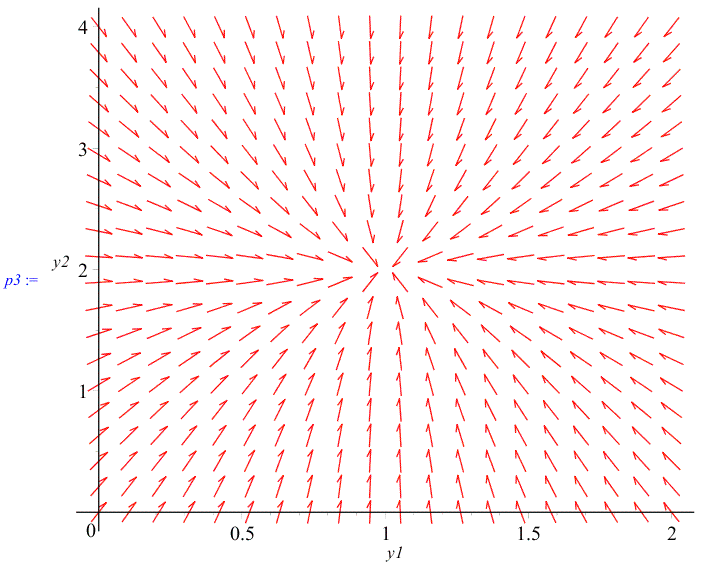
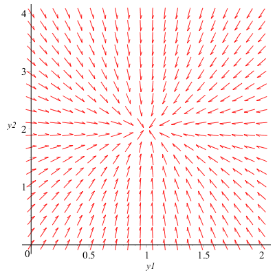

Plotting Two-dimensional Differential Equations
The DEplot routine from the DEtools package is used to generate plots that are defined by differential equations. This worksheet details some of the options that are available, in sections on Interface and Options.
In order to access the routines in the DEtools package by their short names, the with command has been used.
| > |  |
| > |  |
Autonomous systems are automatically determined for plotting phase portraits. For instance,
| > |
Textbook Example 24.12 Both roots Negative Stable Node
| > |  |
| (1.1) |
| > |  |
| (1.2) |
| > |  |
|  |
| > |
| > |
 |
Direction field with solution curves
| > |
|  |